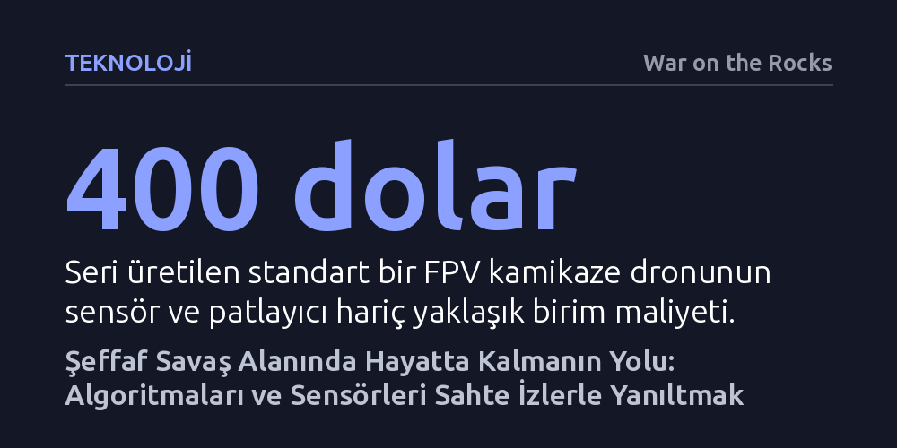

TEKNOLOJI · War on the Rocks · 2026-10-24
Sensörler ve İHA’larla şeffaflaşan cephede manevra yapabilmenin tek yolu, insan komutanı değil yapay zekâlı sensör ve hedefleme zincirini sahte izlerle yanıltmaktır. Ucuz elektronik yemler ve operasyonel aldatma, birliklere kamikaze dronlardan kaçınarak hareket serbestisi kazandıran en kritik doktrine dönüşüyor.
Geleneksel askeri kamuflajın devrinin kapandığını, modern savaşta hayatta kalmanın saklanarak değil, düşman algoritmalarını ucuz sahte sinyallerle yanıltarak mümkün olduğunu gösterir.

5 Ocak 2025 gecesi Pokrovsk cephesindeki bir Ukrayna komuta merkezinde, daha önce benzeri görülmemiş bir taktik denendi. Görev basitti ancak hayati bir risk taşıyordu: Düşmanın dinlediği bilinen açık bir telsiz kanalından sahte bir anons geçilecek ve bir sonraki gün intikal edilmesi planlanan Kotlyne mevkiindeki siperin hâlâ dost birliklerin elinde olup olmadığı test edilecekti. Telsizdeki sahte yardım çağrısından tam iki dakika sonra, bölgenin üzerinde asılı duran termal kameralı keşif dronu iki Rus askerinin sığınaktan fırlayıp siperi teftişe başladığını kaydetti. Sahte çağrı amacına ulaşmıştı; düşman reaksiyon vermeye zorlanmış, mevzinin düştüğü anlaşılmış ve kendi birliklerinin boş yere pusuya düşmesi engellenmişti.
Pokrovsk ve çevresindeki çatışmalar, kara savaşının artık kitlesel otonom sistemlerin ve kesintisiz gözetlemenin hüküm sürdüğü yeni bir evreye girdiğini gösteriyor. Termal kameralar, sinyal istihbaratı ve havada devriye gezen yüzlerce insansız hava aracı (İHA), muharebe sahasını neredeyse tamamen şeffaf hale getirdi. Bu yeni gerçeklikte, geleneksel askeri taktiklerin temel direği olan gizlenme ve siper alma tek başına manevrayı korumaya yetmiyor. Yüzeyde açıkça hareket eden her unsur, dakikalar içinde tespit edilip vuruluyor.
Bu açmazdan çıkmanın yolu, düşmanı yanıltacak sahte taktik anlatılar ve elektromanyetik izler üretmekten geçiyor. Kotlyne tecrübesinin kanıtladığı gibi, aldatma faaliyeti üç temel işlev görüyor: Düşmanı harekete zorlayarak keşif sağlıyor, karşı tarafın gerçek niyetini ifşa ediyor ve dikkatini sahte sektörlere çekerek asıl dost manevrasını perdeleyen bir bilgi sisi yaratıyor. Takım ölçeğinde doğaçlama yapılan telsiz hilelerinden kolordu ölçeğindeki koordineli aldatmacalara kadar her kademede aldatma, şeffaf cephenin en hayati savunma aracına dönüşüyor.
Soğuk Savaş döneminden kalma geleneksel askeri aldatma doktrinleri, temelde karşı tarafın insan karar vericisini hedef alırdı. Komutanın zihnine yanlış bir tablo yerleştirerek onu hatalı bir harekâta yönlendirmek ana amaçtı. Oysa yapay zekâ destekli otonom sistemlerin hâkim olduğu bir muharebe sahasında, taktik bir izin ilk muhatabı bir general veya subay değildir. Bilgiyi ilk işleyen mekanizma; optik, radar ve radyo frekans verilerini birleştiren bir sensör füzyon motoru ve hedefin türünü belirleyen otomatik yapay zekâ sınıflandırıcısıdır.
İnsan operatör, cepheyi doğrudan değil, algoritmaların filtreleyip önceliklendirdiği ekranlar üzerinden görür. Bu durum, aldatmanın muhatabını kökten değiştiriyor. Artık stratejistler yalnızca düşman kurmayını değil; sensörlerin tespit hızını, algoritmaların veri işleme kapasitesini ve sınıflandırıcıların bant genişliğini manipüle etmek zorunda. Bir sahte hedef sistemi, ya sınıflandırıcıya yanlış bir hedef doğrulaması yaptırmalı ya da en azından algoritmayı tereddütte bırakarak analiz döngüsünü doyurmalı ve kitlemelidir.
Bu yaklaşım, aldatma operasyonlarının temposunu da insan hızından makine hızına taşıyor. Kararın saniyeler içinde verildiği bir döngüde aldatma, önceden hazırlanıp statik biçimde sahnelenen bir tiyatro oyunu olamaz. Tıpkı Kotlyne'de iki dakika içinde tepki alınması gibi, aldatma sürekli geri bildirim toplayan, düşman algoritmasının yanıtını anında ölçen ve kendini yineleyen dinamik bir etkileşim döngüsü olmak zorundadır.
Aldatmanın ekonomik ve taktik mantığı en belirgin biçimde hava harbinde görülüyor. Rus ordusu, Ukrayna'ya fırlattığı İHA saldırı paketlerinde silahsız sahte yemlere yoğun biçimde bel bağlıyor. Alabuga tesisinde üretilen köpük gövdeli Gerbera ve ahşap Parodiya dronları, üzerlerindeki Lüneburg merceği sayesinde radarda tıpkı patlayıcı yüklü bir Şahid kamikaze dronu gibi görünüyor. Maliyeti 10.000 doların altında olan bu sahte araçlar, fırlatılan sürülerin neredeyse yarısını oluşturuyor ve karşı tarafın yüz binlerce hatta milyonlarca dolarlık Batı menşeli hava savunma füzelerini boş yere tüketmesini sağlıyor. Ukrayna da buna karşılık 2.500 dolarlık Sting önleme dronları ve kendi uzun menzilli sahte İHA'larını geliştirerek karşılık veriyor.
Karada ise maliyet denklemi çok daha acımasız işliyor. Geçmişte zırhlı araçları korumak için kullanılan 10.000 ila 100.000 dolarlık şişme maketler, maliyeti yüz binlerce dolar olan güdümlü tanksavar füzelerine karşı karlı bir yatırımdı. Ancak günümüz cephesinde seri üretilen bir FPV kamikaze dronunun gövde maliyeti 400 dolara kadar inmiş durumda. Böylesine ucuz ve bol bir tehdide karşı pahalı sahte hedefler konuşlandırmak sürdürülebilir değildir. İdeal bir kara yeminin, birkaç transistör ve ucuz ticari elektronik bileşenle termal ve radyo izi üreterek 400 doların çok altında bir maliyetle imal edilmesi gerekiyor.
Bununla birlikte aldatmanın kârlılığı yalnızca harcanan mühimmatın fiyat farkıyla ölçülemez. Sahaya yayılan sahte izler, düşman ateşini üzerine çekmese dahi kritik bir manevra koridoru açıyorsa, gerçek birlikleri gizleyecek operasyonel bir belirsizlik yaratıyorsa veya karşı tarafa zaman kaybettiriyorsa amacına ulaşmış demektir. Asıl getiri, tüketilen mühimmattan ziyade birliklere geri kazandırılan hareket serbestisidir.
Düşman sensörlerini sadece sinyal gürültüsüyle boğmak kaynak tüketir ancak karşı tarafın belirli bir yönde yanlış karar almasını garanti etmez. Askeri aldatmanın en gelişmiş boyutu, düşmanın olayları kendi mantığıyla yorumlayarak aldatanın arzuladığı sonuca kendi iradesiyle varmasını sağlayan refleksif kontrol yöntemidir. Sovyet ve Rus askeri düşüncesinde köklü bir geçmişe sahip olan bu yaklaşım, hasma titizlikle kurgulanmış yanlış veriler besleyerek onun kendi zihninde kurduğu muhakemeyi manipüle eder.
Ukrayna 3. Ordu Kolordusu'nun Eylül 2026'da icra ettiği Vivaldi Harekâtı, modern muharebede refleksif kontrolün en somut örneğini sundu. Harekâtın ilk safhasında orta menzilli hassas vuruşlarla Rus elektronik harp istasyonları ve dron pilot ekipleri hedef alındı. Eşzamanlı olarak uygulanan katı bilgi karartması ve sinyal karıştırıcılardan oluşan bir koruma kubbesi sayesinde yaklaşık 20.000 Rus dronu körleştirildi. Ardından sahaya sürülen sahte taktik izler ve inandırıcı sahte manevralarla düşman yanıltılarak Nove yerleşimi ve hâkim tepeleri kurtarıldı.
Bu başarının arkasında, operasyonel güvenlikten sorumlu özel bir birliğin Third Army Corps raporunda belirtildiği gibi "savaş alanında gerçeklikle örtüşmeyen bir tablo yaratmak" amacıyla kurguladığı tutarlı sahte anlatı yatıyordu. Üstelik bu tür karmaşık aldatmacaların sahada kaosa yol açmaması için, tüm birliklerin Delta gibi gerçek zamanlı dijital haritalama sistemleri üzerinden aynı durumsal farkındalığı paylaşması ve sahte sinyallerin elektromanyetik muharebe düzeniyle kusursuz biçimde koordine edilmesi şarttır.
Aldatmanın mucizevi bir silah olduğu yanılgısına kapılmamak gerekir; zira aldatma ile tespit algoritmaları arasındaki mücadele sürekli bir uyum yarışıdır. Bugün yapay zekâlı bir sensörü kandıran sahte bir ısı veya radyo sinyali, karşı tarafın veri toplayıp modelini yeniden eğitmesiyle yarın kolayca bir aldatma göstergesine dönüşebilir. Bu yarışta üstünlük, sahte sinyalleri dijital olarak hızla güncelleyebilen ve düşmanın yeniden öğrenme döngüsünden daha hızlı parametre değiştirebilen tarafta kalacaktır. Düşman bu izleri zamanla tanımasa bile, sahte hedeflere ucuz dronlarla saldırarak oyunu bozabilir.
Diğer yandan sahayı sahte termal ve elektromanyetik izlerle doldurmak, dost birlikler ve koalisyon ortakları için de ciddi bir tehlike doğurur. Bir birliğin yaydığı sahte sinyaller, komşu birliğin ekranında düşman hedefi gibi görünebilir ve vahim dost ateşi olaylarına yol açabilir. Bu nedenle her sahte sinyalin konumu, frekansı, yayılma gücü ve geçerlilik süresi dijital ağlarda kayıt altına alınmalı ve merkezi olarak koordine edilmelidir.
Son olarak, harp sahasında aldatmanın sınırlarını uluslararası insancıl hukuk çizer. Cenevre Sözleşmeleri çerçevesinde askeri hileler meşru kabul edilirken, ambulans, insani yardım veya sivil koruma sembollerinin taklit edilmesi gibi hainlik suçları kesinlikle yasaktır. Sivillerin bulunduğu bölgelerde sahte hedeflerle düşman ateşini üzerlerine çekmek doğrudan hukuki sorumluluk doğurur. Dolayısıyla sahte iz filolarının kullanımı; katı sivil mevcudiyet değerlendirmeleri, coğrafi güvenlik bölgeleri ve net komuta onayları içeren bağlayıcı bir askeri doktrine oturtulmalıdır.